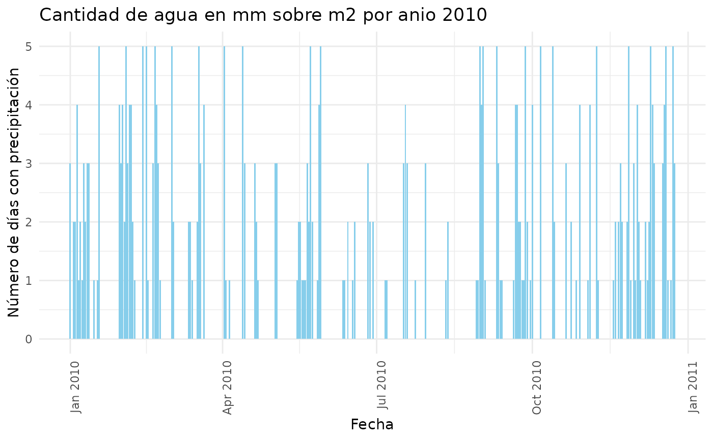

Importamos el paquete
Funcion conversion()
Convierte una temperatura de Fahrenheit a Celsius:
Esta funcion toma un valor numerico en grados Fahrenheit y lo convierte a grados Celsius utilizando la formula estandar de conversion: Celsius = (Fahrenheit - 32) * 5 / 9.
Es util para realizar conversiones rapidas entre las dos escalas de temperatura mas comunes.
conversion(98)
#> [1] 36.66667Funcion resumen_meteorologico()
Genera un resumen de las condiciones meteorologicas para un ano especifico:
Esta funcion toma un conjunto de datos meteorologicos y un ano como parametros. Luego, filtra los datos para el ano solicitado y calcula el resumen de las condiciones meteorologicas, incluyendo:
-La temperatura media anual medida a 150 cm de altura. -La temperatura maxima y minima anual. -El total de precipitacion anual. -El total de dias con granizo. -El total de horas con frio. Este resumen proporciona una vision completa de las condiciones climaticas de un ano determinado
load("../data/dataset_completo.rda")
resumen_meteorologico(dataset_completo, anio_usuario = 1973)
#> temperatura_media temperatura_maxima temperatura_minima precipitacion_total
#> 1 17.57041 42 -4 5602.8
#> granizo_total horas_frio_total
#> 1 4 2059.685Funcion grafico_precipitacion()
Genera un gráfico de barras que muestra el numero de dias con precipitacion durante un ano especifico:
Esta funcion crea un grafico de barras en el cual el eje x representa las fechas de los dias con precipitacion (mayor a 0) en el ano especificado, y el eje y representa el numero de dias con precipitacion. El grafico visualiza de manera efectiva la cantidad de dias lluviosos o con precipitaciones significativas durante el ano seleccionado.
grafico_precipitacion(dataset_completo, 2010)
Funcion temperaturas()
Identifica los dias mas calurosos y los mas frios de un ano especifico:
Esta funcion permite conocer cual fue el dia mas caluroso y cual fue el dia mas frio del ano solicitado. La funcion devuelve tanto la temperatura maxima como la temperatura minima de esos dias, proporcionando una vision clara de las condiciones extremas durante ese periodo.
temperaturas(dataset_completo, 2011)
#> Anio Dia_Mas_Calido Temperatura_Maxima Dia_Mas_Frio Temperatura_Minima
#> 1 2011 2011-12-21 33.7 2011-08-01 3.45Funcion lectura_datos()
Esta funcion permite leer los datos meteorologicos historicos de una estacion especifica a partir de su ID. Si los datos ya se han descargado previamente, la funcion los lee desde el directorio temporal; si no, los descarga desde la URL correspondiente y los lee.
dataset <- lectura_datos("NH0046")
#> Descargando y leyendo el archivo de estacion 'NH0046' en el directorio
#> temporal.
head(dataset)
#> id fecha temperatura_abrigo_150cm temperatura_abrigo_150cm_maxima
#> 1 NH0046 1973-01-01 27.00 33.6
#> 2 NH0046 1973-01-02 27.20 34.9
#> 3 NH0046 1973-01-03 25.15 29.6
#> 4 NH0046 1973-01-04 26.45 32.6
#> 5 NH0046 1973-01-05 26.05 31.0
#> 6 NH0046 1973-01-06 20.45 27.5
#> temperatura_abrigo_150cm_minima temperatura_intemperie_5cm_minima
#> 1 20.4 17.8
#> 2 19.5 17.3
#> 3 20.7 20.1
#> 4 20.3 18.9
#> 5 21.1 19.5
#> 6 13.4 11.5
#> temperatura_intemperie_50cm_minima temperatura_suelo_5cm_media
#> 1 NA NA
#> 2 NA NA
#> 3 NA NA
#> 4 NA NA
#> 5 NA NA
#> 6 NA NA
#> temperatura_suelo_10cm_media temperatura_inte_5cm
#> 1 NA NA
#> 2 NA NA
#> 3 NA NA
#> 4 NA NA
#> 5 NA NA
#> 6 NA NA
#> temperatura_intemperie_150cm_minima humedad_suelo precipitacion_pluviometrica
#> 1 NA NA 0.0
#> 2 NA NA 3.7
#> 3 NA NA 0.0
#> 4 NA NA 0.0
#> 5 NA NA 0.0
#> 6 NA NA 0.0
#> granizo nieve heliofania_efectiva heliofania_relativa tesion_vapor_media
#> 1 0 0 13.3 93 23.0
#> 2 0 0 11.1 78 24.1
#> 3 0 0 9.7 68 24.5
#> 4 0 0 13.4 94 23.0
#> 5 0 0 13.3 94 16.1
#> 6 0 0 12.8 90 16.8
#> humedad_media humedad_media_8_14_20 rocio_medio duracion_follaje_mojado
#> 1 NA 61 19.7 NA
#> 2 NA 57 20.5 NA
#> 3 NA 60 20.8 NA
#> 4 NA 64 19.7 NA
#> 5 NA 49 14.1 NA
#> 6 NA 59 14.8 NA
#> velocidad_viento_200cm_media direccion_viento_200cm
#> 1 7.2 NA
#> 2 3.2 NA
#> 3 11.2 NA
#> 4 8.8 NA
#> 5 13.6 NA
#> 6 13.6 NA
#> velocidad_viento_1000cm_media direccion_viento_1000cm velocidad_viento_maxima
#> 1 9 NA
#> 2 4 NA
#> 3 14 NA
#> 4 11 NA
#> 5 17 NA
#> 6 17 NA
#> presion_media radiacion_global radiacion_neta evaporacion_tanque
#> 1 NA 31.1 NA NA
#> 2 NA 27.3 NA NA
#> 3 NA 24.8 NA NA
#> 4 NA 31.2 NA NA
#> 5 NA 31.0 NA NA
#> 6 NA 30.2 NA NA
#> evapotranspiracion_potencial profundidad_napa horas_frio unidad_frio
#> 1 7.2 NA 0 NA
#> 2 6.2 NA 0 NA
#> 3 5.9 NA 0 NA
#> 4 7.3 NA 0 NA
#> 5 8.3 NA 0 NA
#> 6 6.3 NA 0 NAFuncion unir_datasets()
Esta funcion toma una lista de IDs de estaciones meteorologicas y los usa para leer y combinar los datos historicos correspondientes a cada estacion en un solo dataframe. El resultado es un dataframe que contiene los datos combinados de todas las estaciones.
ids_estaciones <- c("NH0046", "NH0098", "NH0437", "NH0472", "NH0910")
dataset_completo <- unir_datasets(ids_estaciones)
#> Lectura del archivo de estacion 'NH0046' desde el directorio temporal.
#> Descargando y leyendo el archivo de estacion 'NH0098' en el directorio
#> temporal.
#> Descargando y leyendo el archivo de estacion 'NH0437' en el directorio
#> temporal.
#> Descargando y leyendo el archivo de estacion 'NH0472' en el directorio
#> temporal.
#> Descargando y leyendo el archivo de estacion 'NH0910' en el directorio
#> temporal.